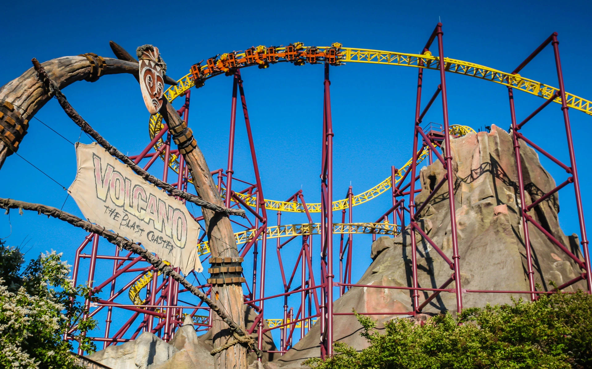

Volcano: The Blast Coaster, or simply Volcano, was an inverted launched roller coaster located at Kings Dominion. Its launch mechanism utilized linear induction motor (LIM) technology. After a series of delays, Volcano opened to the public on August 3, 1998. A portion of the ride was enclosed inside an artificial mountain, constructed in 1979,which previously housed other attractions. Following nearly two decades of operation, Volcano closed a few weeks into the 2018 season, and the closure becamen permanent during the following offseason. In 2024, Rapterra, a launched wing coaster, was announced to replace Volcano.
